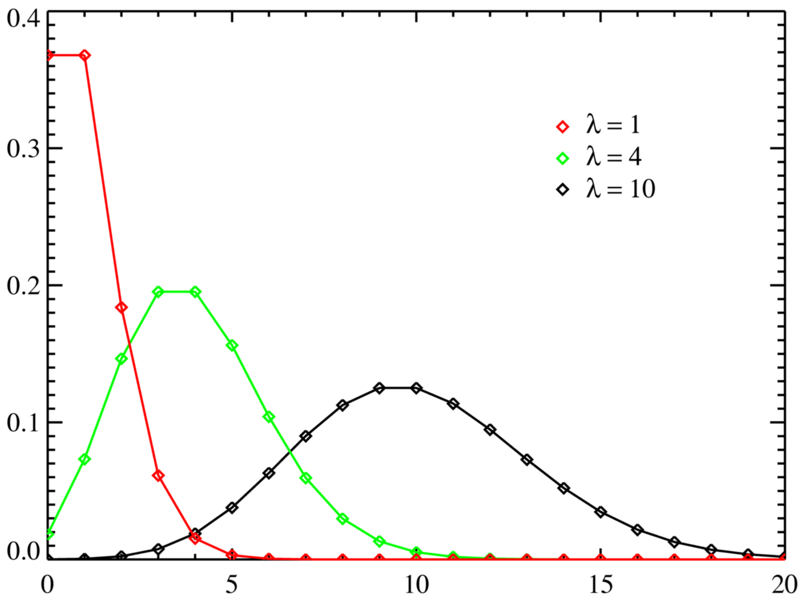

Distribuição de Poisson
A distribuição de Poisson é uma distribuição de probabilidade discreta que modela o número de eventos que ocorrem em um intervalo fixo de tempo ou espaço, quando esses eventos ocorrem com uma taxa média constante e de forma independente. É amplamente utilizada em diversas áreas, como:
- Fenômenos naturais: Número de partículas radioativas que decaem em um determinado período, número de chamadas telefônicas em um call center por minuto.
- Processos industriais: Número de defeitos em um metro de tecido, número de carros que chegam a um pedágio em uma hora.
- Demografia: Número de nascimentos em um hospital por dia, número de acidentes de trânsito em uma cidade por semana.
P(X = x) = (e^(-λ) * λ^x) / x!
A probabilidade de que existam exatamente x ocorrências (x sendo um inteiro não negativo, X = 0, 1, 2, ...)
-
e é base do logaritmo natural (e = 2.71828...),
-
x! é o fatorial de x,
-
λ é um número real, igual ao número esperado de ocorrências que ocorrem num dado intervalo de tempo. Por exemplo, se o evento ocorre a uma média de 4 minutos, e estamos interessados no número de eventos que ocorrem num intervalo de 10 minutos, usaríamos como modelo a distribuição de Poisson com λ=10/4= 2.5.
Como função de x, esta é a função de probabilidade. A distribuição de Poisson pode ser derivada como um caso limite da distribuição binomial.Logo Usamos o modelo de Poisson quando temos uma média de quantas vezes determinado fato estudado ocorre em um intervalo fixo de tempo, representado por λ , assim {X=x} representa o evento o fato ocorre x vezes no intervalo determinado.
-
Problema: Uma loja de conveniência recebe em média 3 clientes por hora. Qual a probabilidade de que em uma hora específica cheguem exatamente 5 clientes?
-
Modelagem: O número de clientes que chegam por hora pode ser modelado por uma distribuição de Poisson, onde a taxa média λ é igual a 3.
-
Média (E[X]) = Variância (Var[X]) = λ:A média e a variância da distribuição de Poisson são ambas iguais ao parâmetro λ.
-
Simetria A distribuição de Poisson é assimétrica à direita para valores pequenos de λ e se aproxima de uma distribuição normal à medida que λ aumenta.
Um Exemplo Prático da Distribuição de Poisson
Uma central de atendimento telefônico recebe, em média, 10 chamadas por hora. Qual a probabilidade de receber exatamente 15 chamadas em uma hora específica?
Solução
Identificação:
- O evento de interesse é o número de chamadas recebidas em um intervalo de tempo fixo (1 hora).
- As chamadas são eventos independentes (uma chamada não afeta a probabilidade de outra).
- A taxa média de ocorrência é constante (10 chamadas por hora).
-
Parâmetro λ:
λ representa a taxa média de ocorrência, nesse caso, λ = 10 chamadas/hora.
Utilizando a fórmula de Poisson:
P(X = x) = (e^(-λ) * λ^x) / x!
- P(X = x) é a probabilidade de ocorrer exatamente x eventos
- e é a constante de Euler (aproximadamente 2.71828)
- λ é a taxa média
- x é o número de ocorrências desejado (no nosso caso, x = 15)
- x! é o fatorial de x
Substituindo os valores:
P(X = 15) = (e^(-10) * 10^15) / 15!
Usando uma calculadora científica ou software estatístico, encontramos:
P(X = 15) ≈ 0.0347
Interpretação
A probabilidade de a central de atendimento receber exatamente 15 chamadas em uma hora é de aproximadamente 3,47%. Isso significa que, se repetirmos esse experimento (contar o número de chamadas em uma hora) muitas vezes, em cerca de 3,47% das vezes obteremos exatamente 15 chamadas.
Por que a Distribuição de Poisson é adequada neste caso?
-
As chamadas telefônicas são eventos independentes.
-
A taxa média de chamadas é constante.
-
O número de chamadas em um intervalo de tempo pequeno é relativamente baixo.
